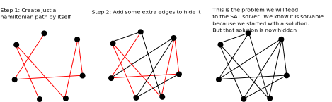
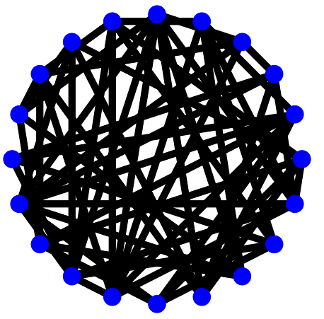

Final Project: Solving NP Complete Problems
Chris Tralie
Worked Example: Hamiltonian Cycles
To give you some more pointers, I've worked through a full example that would that would fulfill all of the project requirements: a Hamiltonian Path reduction (though, of course, you'll have to choose a different problem from Hamitonian Path or Hamiltonian Cycle). The code can be found in HamiltonianPath.java and HamiltonianPathCert.java. In your problem, you should also have two such files.
Generating Random Graphs Containing Hamiltonian Paths
To generate a random Hamiltonian path, I first choose a random permutation using a utility function getShuffledNumbers in NPCompleteProblem.java (FYI this method implements Fisher-Yates shuffling). You can use this method in your random generation if it helps. I then add the N-1 edges implied by this random permutation to ensure that there is a Hamiltonian path in the graph. Next, I add an additional O(N3/2) random edges to make the problem harder.
Below is a picture explaining this graphically

As an example in code, let's suppose we executed the following snippet in the main method of HamiltonianPath.java
Then we'll get the following graph with 10 vertices:

As another example, suppose we have this code
Then we'll get the following graph with 20 vertices:
Hamiltonian Path Certificate Generation
To convert reduce a Hamiltonian path problem into a CNF form, I used O(N2) variables: one for each element in the permutation and one for each possible vertex choice at that permutation index. That is, xij = true if the ith element in the path is vertex j. Then, I had to enforce a number of conditions by constructing O(N3) clauses:
1. Each Graph Vertex Must Appear
Each vertex j must appear in the path more than 0 times (click here to jump to this section in the code). In other words, a clause of the form
must be part of the CNF formula for each j = 1, 2, ..., N.
2. No Vertex Should Appear More Than Once on The Path
Each vertex j must appear at most once in the Hamiltonian path (Click here to jump to this section in code). Written as an implication, this translates into
Converting into CNF form, this is the clause
Note that there are O(N3) of these 2-element clauses
3. At Most One Vertex At Each Path Index
There is at most one vertex at each index i of the path (Click here to jump to code). Written as an implication, this translates into
There are also O(N3) of these 2-element clauses.
4. Every Path Position Must Be Occupied
Every position on the path must have at most one node (Click here to jump to this section of the code)
5. The Edges on The Path Must Be Edges on The Graph
Finally, we'll add clauses that enforce that the edges chosen in the path are actually edges on the graph (Click here to view the code). In implication form, this can be written as
This translates into the following 2-element clauses
Notice that we had to be a bit tricky here since we need ORs in the CNF clauses instead of ANDs.
Verifier
Click here to see code for the certificate constructor and verifier. This uses the same polynomial time verifier we discussed in class that simply makes sure that each vertex shows up once in that path and that each edge in the path is actually in the graph. You can see details in the satisfiesProblem method in HamiltonianPathCert.java.
Putting It All Together
I have implemented a method in the HamiltonianPathCert class that draw the line segments in the certificate on top of line segments of the graph that are already there. If you run the following code
Then you'll get this.

You'll find code like this in the main method of the HamiltonianPath class. For completeness, below is the solution to N = 10, seed = 0 shown before
Feel free to use your own drawing code using the StdDraw API to help you debug in your problem in a similar way.